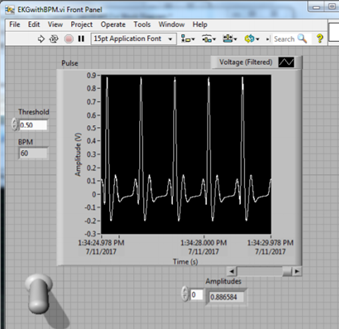

1.0 Background
Operational amplifier circuits can be constructed to serve as an EKG. There are several important design considerations when building ECGs. These include source impedance, signal frequency, and signal size. When measurng source impedance, or the resistance of the source of the electrical signal, it is important not to draw current from the input signal, which is the patient when building an ECG. If you calculate source impedance too low, and subsequently build your circuit around that measurement, you will draw current from the input signal since your circuit is not getting enough voltage from external power sources. Signal frequency is the frequency of the signal being produced--the heartbeat we are measuring. It is only important to input the peaks and troughs of the ECG signal into our circuit; the frequency of the heartbeat is small (0-3Hz), so bandpass filters can be used to pass only these frequencies through and eliminate signal noise (ambient lighting, 60Hz noise, etc.). The heartbeat's electrical potential ranges from ~10-100 μV, so a large gain is desired if any readable output is to be attained. I first built a physical filtering system to process the heartbeat, then used ADC (analog to digital conversion) in Multisim to process the wave form. Digital filtering is preferable, as it creates a cleaner and more consistent signal output due to decreased signal attenuation and automated filter adjustments. ADC also prints the signal in a cleaner user interface than physical filtering, which requires a function generator.
2.0 Signal Filtering
A 6mV 1Hz sine wave from the function generator was used to simulate a heartbeat. The filter schematic is depicted in fig 3. The filtered output was cleaner and effectively reduced signal attenuation. The DC offset was eliminated, producing a signal of ~1V lesser in amplitude, as expected (with a gain of almost unity, the signal should be the op-amp output minus 1). This is, however, for a function generator input. In reality a heart signal is much messier (baseline wander, mains frequency/lighting noise, muscle noise, RF noise etc.), possibly necessitating a notch filter to first filter out the DC interference, then 60Hz mid-range interference without cutting out too much of the heart signal. I used an LM324 operational amplifier to increase the magnitude of the signal.

Bandpass Circuit Schematic (rendered in Multisim). Note: The filter input signal was actually 2Vpk, 1Hz.

AD623 Instrumentation amplifier filtered output signal. Top: filtered signal Bottom: Input Signal
3.0 AD Conversion
After building a physical filtering system, I wanted to use ADC (analog to digital conversion) to create a usable signal. I used LabView for my signal processing.
Displaying the processed pulse, or heartbeat, is the final step in creating a functional ECG. I used a 5mV pk, 1Hz signal (correlating to 60bpm) from the function generator on pulse mode to simulate a repetitive heartbeat. The concept for my LabView VI is ADC: It takes the EKG analog input and displays the waveform, running peak amplitude with respect to a threshold voltage, and the BPM of the EKG signal for clinical use. Using the DAQ assistant sub-VI, data from the DAQ was acquired and set such that the maximum and minimum VI inputs were in line with the other inputs. My settings included continuous sampling (1k samples at 1kHz sampling frequency). The signal was then fed into a low pass filter sub-VI with a 5Hz cut off frequency, which produced a clear signal which displayed on our “EKG monitor” plot in real time.
Several steps were required to provide an accurate BPM calculation and display. First, a peak detector was used to find each QRS complex (the largest peak in a heartbeat). Each peak was recorded, allowing for BPM calculations based on pulse width between peaks. Each iteration is passed through the shift register into the while loop so that it be input back into the calculation to count the BPM and time passed. Finally, the amplitudes from the peak detector are implemented into an array maximum and minimum sub-VI, so that it can convert the array values to analog peak values so that I can then compare them and use that logic for the true/false Boolean for the amplitude case structure. Basically: if the peak exceeds 0 and exceeds the set threshold, then the case structure allows for that peak amplitude to be displayed.
This setup worked perfectly, displaying accurate BPM and waveform seen below.

Bandpass Circuit Schematic (rendered in Multisim). Note: The filter input signal was actually 2Vpk, 1Hz.

Completed AD623 instrumentation amplifier filtered output signal.